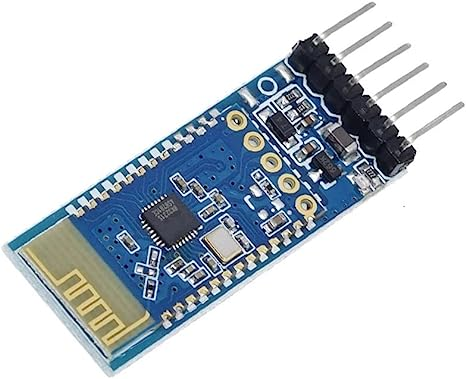
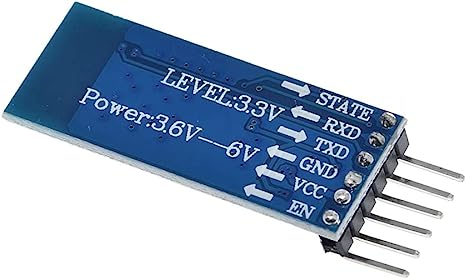

Note
Hello, welcome to the SunFounder Raspberry Pi & Arduino & ESP32 Enthusiasts Community on Facebook! Dive deeper into Raspberry Pi, Arduino, and ESP32 with fellow enthusiasts.
Why Join?
Expert Support: Solve post-sale issues and technical challenges with help from our community and team.
Learn & Share: Exchange tips and tutorials to enhance your skills.
Exclusive Previews: Get early access to new product announcements and sneak peeks.
Special Discounts: Enjoy exclusive discounts on our newest products.
Festive Promotions and Giveaways: Take part in giveaways and holiday promotions.
👉 Ready to explore and create with us? Click [here] and join today!
JDY-31 Bluetooth Module

Warning
This module does not support Apple device connections, so tutorials involving this module require an Android phone or tablet.
The JDY-31 Bluetooth module is a pin-compatible replacement for the HC-06 Bluetooth module. It is simpler and easier to use than the HC-06 and is often available at a slightly lower cost.
The JDY-31 Bluetooth module is based on Bluetooth 3.0 SPP design and can support Windows, Linux, and Android data transmission. The working frequency of the JDY-31 Bluetooth module is 2.4 GHz with modulation mode GFSK. The maximum transmission power is 8 dB, and the maximum transmission distance is 30 meters. Users can modify the device name through AT command, baud rate, and other instructions.
Pins of JDY-31 and their functions:

Pin |
Name |
Description |
|---|---|---|
1 |
STATE |
Connection status pin (not connected low level, output high level after connectio) |
2 |
RXD |
Receiver pin, this pin must connect to TX pin of next device. |
3 |
TXD |
Transmitter pin, this pin must connect to RX pin of next device. |
4 |
GND |
GND |
5 |
VCC |
Power Supply(1.8-3.6V, 3.3v recommended) |
6 |
EN |
enable or disable the module. When this pin is held high, the module is enabled and begins transmitting and receiving data. |
patch application: general application only need to connect VCC, GND, RXD, TXD 4 pins, if you need to actively disconnect in the connection state, send AT+DISC in the connection state.
AT Command Set
Command |
Function |
Default |
|---|---|---|
AT+VERSION |
Version Number |
JDY-31-V1.2 |
AT+RESET |
Soft reset |
|
AT+DISC |
Disconnect (valid when connected) |
|
AT+LADDR |
Query the MAC address of the module |
|
AT+PIN |
Set or query connection password |
1234 |
AT+BAUD |
Set or query baud rate |
9600 |
AT+NAME |
Set or query broadcast name |
JDY-31-SPP |
AT+DEFAULT |
Factory reset |
|
AT+ENLOG |
Serial port status output |
1 |